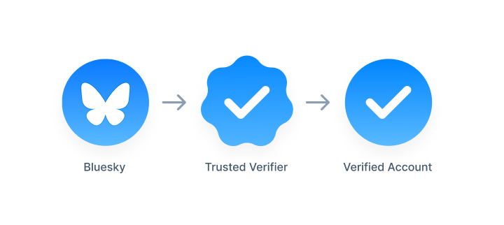

Bluesky における新しい認証方法

また Bluesky が面白いことを始めたらしい。
この記事について Kagi Assistant に要約してもらった。 LLM の言うことだから鵜呑みにしないで原文をチェックしてね。
Blueskyは2025年4月21日に新しい認証の仕組みを発表しました。主なポイントは以下の通りです。
青いチェックマークによる認証の導入
- これまでのドメインをユーザー名に設定する認証（ドメインハンドル）に加え、公式で著名なアカウントに対して青いチェックマークを表示する新しい認証レイヤーを導入。
- Blueskyが積極的に認証を行い、青いチェックを付与する。
Trusted Verifiers（信頼された認証機関）機能
- 独立した組織が直接アカウントを認証できる仕組み。
- Trusted Verifiersは波型の青いチェックマークで表示される。
- 例としてニューヨーク・タイムズが自社のジャーナリストに直接認証を付与可能。
- Blueskyのモデレーションチームが認証の真偽を確認する。
認証の詳細表示と設定
- 認証マークをタップすると、どの組織が認証したかが見られる。
- ユーザーは設定で認証表示をオフにすることも可能。
認証の申請について
- 現時点では直接の認証申請は受け付けていない。
- 今後、安定化した段階で申請フォームを公開予定。
自己認証の推奨
- 公式組織や個人は引き続きドメインをユーザー名に設定する自己認証を推奨。
この新しい認証システムは、信頼性を高め、ユーザーが誰と交流しているかをより明確にすることを目的としています1。
元記事を見るに Bluesky 自身が個々人のユーザアカウントを認証（verification）するのではなく，企業・組織アカウントを verifier として Bluesky が認証した上で，認証された verifier が麾下のユーザアカウントを認証するという仕組みのようだ（つまり不特定のユーザを認証することは想定していない？）。

X.509 な証明書管理の仕組み（hierarchical な信用モデル）とちょっと似てるかもね1。 ユーザアカウントの認証については verifier に丸投げではなく
Bluesky’s moderation team reviews each verification to ensure authenticity.
と Bluesky も監査を行う感じだろうか。
SNS ユーザのアイデンティティを客観的に評価するのは難しい。 というか多分無理。
昔（ゼロ年代）はリアルのユーザと SNS アカウントを（実名を強制するなどして）強引に紐づけようとして，多くの批判にさらされ失敗した。 旧 Twitter はサービス提供者がアイデンティティを認証しバッヂを付与することでユーザ間の差別化を図ろうとしたが，そこから二転三転し，現在の 𝕏 のバッヂは単に有料ユーザであることを示しているに過ぎずアイデンティティについて何も担保しない。
Bluesky による今回の認証方法が上手く回るかどうかは（面白そうではあるが）分からない。 Verifier に対する認証・監査は簡単じゃないと思うし，恣意的な判断が入る余地もある。 それでも…
昨年末に「Bluesky 上で起きたなりすましとサイバースクワッティング」という話を書いたが，少なくともこうしたなりすましが抑制されることを期待したい。
ブックマーク
参考図書

- 信頼と裏切りの社会
- ブルース・シュナイアー (著), 山形 浩生 (翻訳)
- NTT出版 2013-12-24
- 単行本（ソフトカバー）
- 4757143044 (ASIN), 9784757143043 (EAN), 4757143044 (ISBN)
- 評価
社会における「信頼」とは。
-
Bluesky は分散システムとして設計されているので，認証を Bluesky が中央集権的に行うのは拙いという判断なのだろう。でも hierarchical な認証システムを分散環境に入れ込むのは微妙かもしれない。 ↩︎